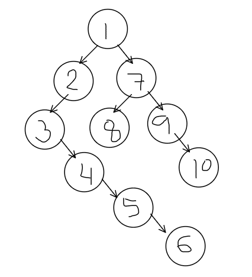

Iterative Post Order Traversal
Contributer: Pradeep Kumar
You are given a binary tree. Your task is to return an array that conatins the Post Order Traversal. A Post Order Traversal is Left->Right->Root
Example1:

Output: 6, 5, 4, 3, 2, 8, 10, 9, 7, 1
Explanation